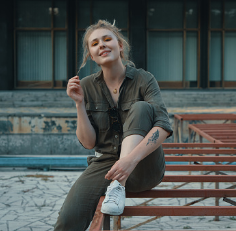

Fie Sund
WHAT?
Contemporary jewelry designed to last a lifetime, to hold a memory and be passed on.
We are inspired by the wonders of our nature and the findings of silver in its raw form, formed in unique wires that are curved and intertwined in miraculous shapes - all made by nature.
HOW?
DEVOTION TO A RESPONSIBLE SOURCING OF MATERIALS
Not all know that precious metals are limited natural resources; mined from areas where the impact on people and nature can be terrifying, if not handled responsibly.
Millions of people live off - and depend on - this industry, and this is why we care.
Stine Lind
WHY?
We want to be a part of the positive impact of sustainable and responsible sourcing of precious metals.
Therefore we only use materials from suppliers that are transparent enough to ensure that the workers have been treated fairly, are a part of social development, and with a high level of environmental protection, that will help to ensure the future of our people and nature.
We want to share a mindset and encourage to demand a production where people and nature are being cherished. The choices you make can affect the positive change in the industry, and you can contribute to a growing market of ethical consumers.